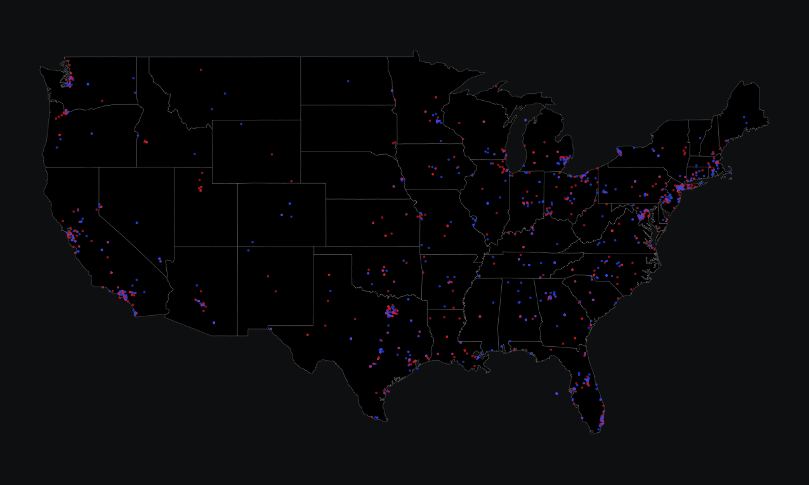
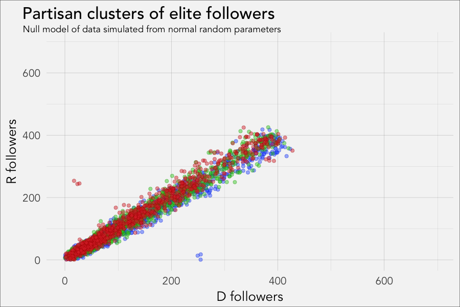
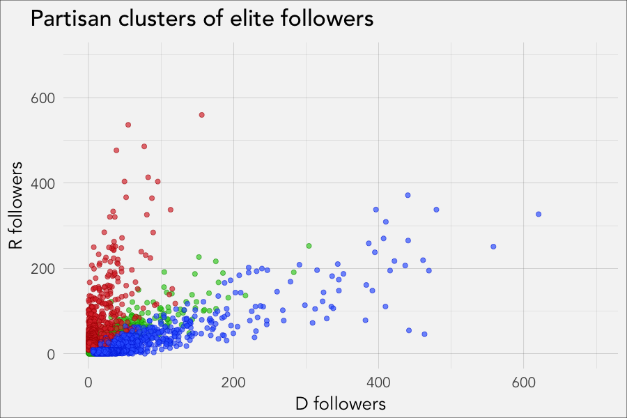
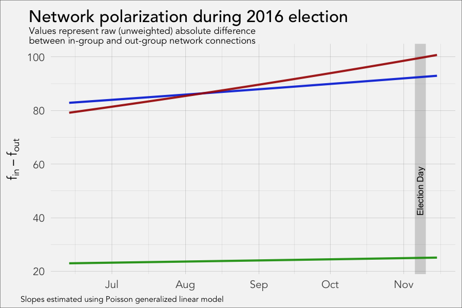
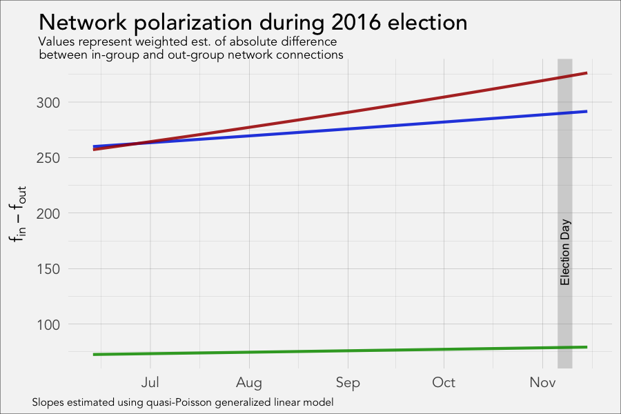

Data Science and
"Big Data" in
Communication Research
Michael W. Kearney
Department of Communication Studies
Center for Research Methods & Data Analysis
University of Kansas
Michael W. Kearney
Department of Communication Studies
Center for Research Methods & Data Analysis
University of Kansas











